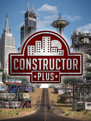

Constructor Plus
Constructor Plus
Details
|  | |
| Playtime | 46m 0s |
| Last Activity | 5/9/2021 3:20:12 |
| Added | 8/19/2023 14:50:25 |
| Modified | 8/19/2023 19:27:12 |
| Completion Status | Played |
| Library | Steam |
| Source | Steam |
| Platform | PC (Windows) |
| Release Date | 2/28/2019 |
| Community Score | 70 |
| Critic Score | |
| User Score | |
| Genre | Indie Simulator Strategy |
| Developer | System 3 Software |
| Publisher | System 3 Software |
| Feature | Multiplayer Single Player |
| Links | Facebook Steam Official Twitch |
| Tag | |
Description

Constructor Plus is the latest in the critically acclaimed series of Constructor games that have captivated gamers for over twenty years. Building on a remarkable legacy with a host of exciting new features and a stunning visual makeover, Constructor Plus proudly takes this building behemoth of a game to even greater heights.
Constructor Plus is the definitive building simulation for the modern day tycoon. With over 147 beautifully designed buildings to choose from (93 more than previous versions), a whopping 65 pre-built city scenarios with different gameplay objectives, brain-testing story mode missions and even the chance to develop out in the countryside or as far away as the moon, this is a huge and innovative playing landscape that stretches the imagination. Throw in a new and greatly improved classic mode for the traditionalist and an updated intuitive set up process and you’ll be building the town of your dreams in no time at all.
It’s your world… now make it work for you!
Start the game as a humble property developer with nothing and work up to being a big time property tycoon where what you build you earn from. Money and good management talks in the building game. Whether you choose to play by the book or delve into dodgy dealings is down to you, either way the more you have the more others want to take it from you. Wit, wealth and wisdom go a long way in a game where growing a thick skin is just as important as growing your empire!
Use your entrepreneurial skills to turn simple wooden shacks into grand mansions, swanky casinos and towering skyscrapers with all the wealth that comes with it. With so many buildings to choose from you can make your town truly unique and highly desirable – great for attracting tenants and encouraging business. Populating the city with grand commissions and breathtakingly beautiful monuments is a shrewd move - The local townsfolk will appreciate the breath of fresh air and generously donate pocket change and lunch money to your “cause.’
Your town is your profit and you’ll want to keep it that way - by whatever unscrupulous means necessary. With cheating landlords and bad tenants to laid-back hippies and angry thugs there’s a lot to deal with. You might want to call in the mob and all the undesirable characters that come with them to thwart enemies intent on running you out of town and taking your hard earned away from you. Giant mutant cockroaches and local hit men can prove useful allies!
You still have a responsible job to do and, depending on the goals you have chosen (or have been assigned!) you will need to ensure that your city is up to scratch. At the end of the day if you’re running your town into the ground the Housing Authority are going to step in and give you the boot.
Constructor Plus – Where growing a thick skin is as important as growing your empire!